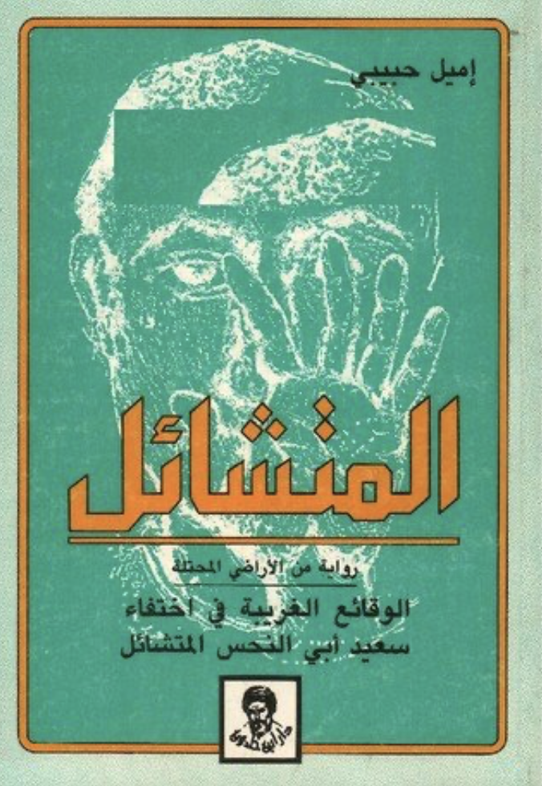

Cover of Al-Waqāʾiʿ al-gharībah fī 'khtifāʾ Saʿīd Abī 'l-Naḥsh al-Mutashāʾil (The Secret Life of Saeed: The Pessoptimist) by Emile Habiby
This is part of the #100ArabNovels project, where I try to revisit the Arab Writers'Association's list of 100 most significant novels, as part of trying to understand the Arab imaginary post-2011
There is some deep wistfulness that permeates Emile Habibi's (1922-1996) second novel Al-Waqāʾiʿ al-gharībah fī 'khtifāʾ Saʿīd Abī 'l-Naḥsh al-Mutashāʾil or The Secret Life of Saeed The Pessoptimst (1974). A clue can be the Samih al-Qasim (1939-2014)'s poem at the beginning of the novel, the waiting for the post, the letter that never arrives. This languished longing is shrouded with a series of absurd events and stories told in the most satirical and nonsensical style. Yet Habibi is never acerbic, nor his sarcasm biting or even bitter, its melancholic, almost plaintive, pointing to a more Arabic origin than the presumed reference he makes to Volatire's Candide, ou l'Optimisme (1759) as a direct precursor and source for his satirized biography. But in truth Habibi's novel is less philosophical than Voltaire's and more akin to another book published in the same year, also of satirical nature, The Life and Opinions of Tristram Shandy, Gentleman, by Laurence Sterne. Both novels come at the heels of a time of great distrust of Enlightenment optimism and the deep questioning of absolute authority, whether the state or religious authority. And both reflect the rise of the modern man, the one that makes his own fate, or to use Volatire's own epicurean dictum, 'cultivates his own garden'.
In the same vein Habibi declares his own disenchantment with all the subject matter of Arab nationalism, and its promise of a liberated, progressive Arab state, based on that rebirth of that consciousness that took place during the Nahda. An ideology that only produced further defeat (1948 Arab-Israeli War, 1955 Tripartite Aggression, 1967 Six Days War). But unlike Voltaire's rational distance or stoic revisionism of that optimism, Habibi falls more in line with Stern's Tristam Shandy, who is unable to reveal anything but through convoluted digressions and double entendres. Habibi invents a whole other state of mind where one acts out of sheer pessimism in the hope one avoids the worst of things, and anticipating a more favourable outcome, thus engendering a delightful and comical attempt at coincidentia oppositorum. Think Hamlet's, 'cruel to be kind' statement to the lecherous Gertrude, implicit in cruelty is a recognition of care and hope for redemption. And implicit in Habibi's pessimism a belief, no matter how cynical in the possibility of goodness.
Despite stylistic similarities and even citation of Voltaire one feels that Habibi's text does not completely fit within that trajectory. It rather harkens back to some older form, namely the Arabic maqamat of the early 10th century. The self-effacing humor, the trickster character of his protagonist, the linguistic play on shifting and contrasting meaning within the same word or expression, sometimes to politically hilarious consequences, the constant pestering of authority is reminiscent of the fool of the maqamat. One can argue that Habibi was trying to parody the modern Arabic novel, specifically novels written in the wake of the independence movement and the rise of Arab consciousness and Arab Nationalism, in reference to his peculiar position as belonging to the Arabs within (Arabs living within the state of Israel). He doesn't seem to be parodying the Palestinian resistance as such, or at least not the optimism of resistance but rather the impossibility of maintaining the static idea of identity in face of something as crushing and complex as the occupation and displacement of Palestine and Palestinians.
Habibi's experimental tale is divided into three books, all named after two women who define the struggle of his protagonist Saeed. There is nothing new or original in Habibi's allegorizing the homeland as 'the female beloved' or the quest for a home, as 'the quest for the female beloved'. In that particular aspect Habibi is in line with all other Arab novelists, Palestinian ones as well. He differs however that he gives his female protagonist far more interesting roles to play and much more power and strength in face of absolutely devastating political circumstances. His women are still beautiful and seductive, but they are also extremely intelligent and ferocious. It is definitely to Habibi's credit that he managed to write female characters that are just as interesting as their male counterparts (if not more interesting at certain points) and that they outlive and outsmart the men (all the men).
Part history, part biography and part 'story', Habibi's novel tries to tell a story that cannot be told. Especially in Arabic. How can an Arab Christian, who is part of the Arabs within, tell his story without having his loyalty questioned and without being anathematized by the state of Israel? He can't. And this is where Habibi's novel is strange as its protagonist. Because it does tell a history not often told and not often allowed to be told. And through it, Habibi mocks both the Arab and Israeli responses to the predicament of Palestine and Palestinians, whether the ones who were displaced or the ones who managed to remain within the state of Israel. There is a certain weariness of the politics of resistance, Habibi ruthlessly satirizes the communist party (probably one of the very few political platform available to Arabs within) and the deep suspicion the state of Israel regarded and regards its Arabic population and the many ways it punished and still punishes them for being Arabs.
Although framed within the notion of madness (the narrator is depicted as finally escaping his fate via aliens while in truth he ended up in an asylum), the protagonist is not mad, in the sense of committing preposterous deeds, as much as he is out sync with his political reality, hence the tragic undertone of the whole novel. Habiby is at his best telling the history of Acre and Haifa, their beaches, their vistas, their streets, all told in haunting and striking details. They are cities haunted by ghosts of the past, very much like the rest of Palestine. And it is that restless quality, unresolved departure/disappearance, that creates this rupture in understanding and dealing with the current reality. Someone like Habiby cannot be a fully assimilated "Israeli citizen" because the state of Israel (caricatured throughout the novel through the character of 'the small man') would never trust an Arab to be a loyal citizen and would never admit as to why (such loyalty would be based on the denial of killing and displacement of the Palestinian people).
Perhaps the novel's crowning achievement is introducing a way to talk about Palestine that is so closely attached and inspired by the Arab's own history and literary traditions, but also that gives meaning to the experiences of those who usually would not be able to articulate those experiences. In the third book of the novel Habiby vividly capture the horrors of displacement and uprootedness by invoking the most Arabic of all motifs, the stake, being gored on a stake. The inability to leave or dislodge oneself from the stake, on one hand the threat of a new displacement and on the other, the impossibility of reviving the past, one cannot free oneself from such agonizing condition, this is the ultimate expression of what it means to be an Arab within.
And Habiby did that with an odd sense of humor (childish at times and self-deprecating at other times) and while trying to portray the lives of Palestinians across a span of at least 1000 years. An experiment that is irresistibly unique and thought-provoking.
*The novel was translated to English by Salma Khadra Jayyusi and Trevor Le Gassick probably sometime in the late 1980s and eventually the standard edition was published by Interlink World Fiction in 2003